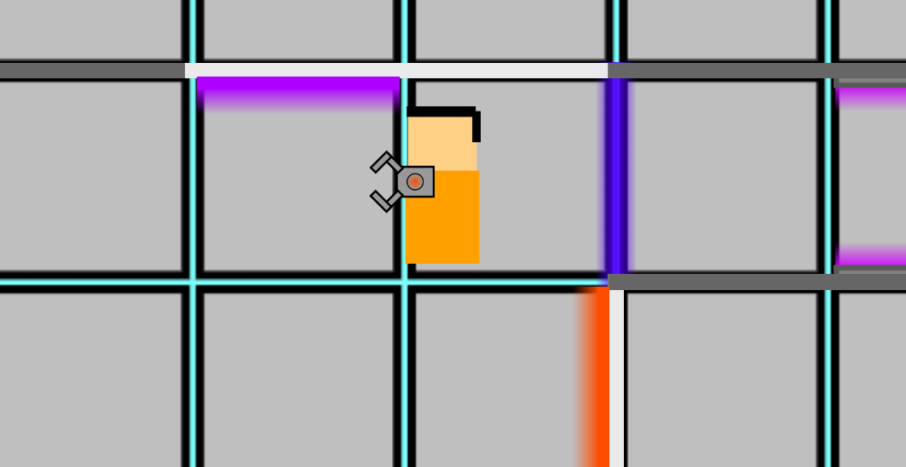
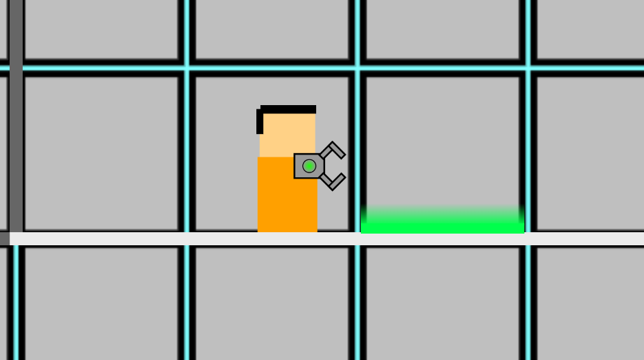
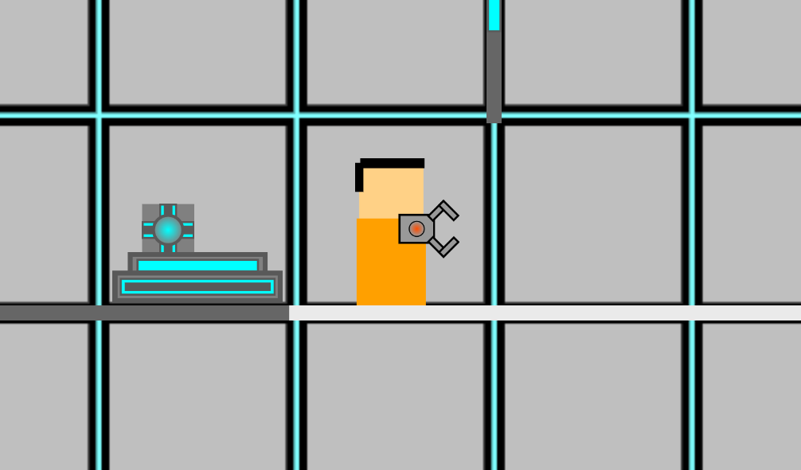
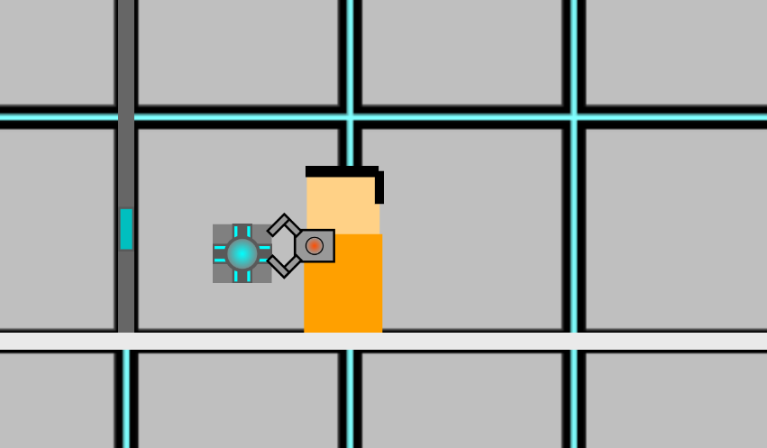
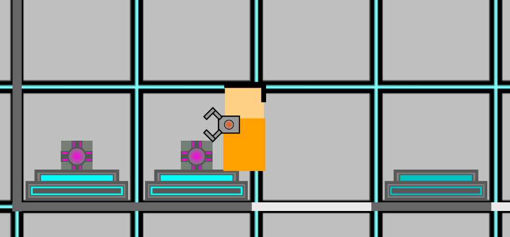

PVL stands for Parallax View Labs. It is a puzzle game that is similar to games like portal. the goal of each level is simple, get to the teleporter. There are many mind bending mechanics such as the one sided portal or quantum superposition boxes. The superposition boxes exist in two positions at once until they're picked up. When a superposition cube is destroyed, it respawns and the two positions are restored. A normal portal works by entering one side and coming out of the other side. The one sided portal works by going into it but you come out the same side.




